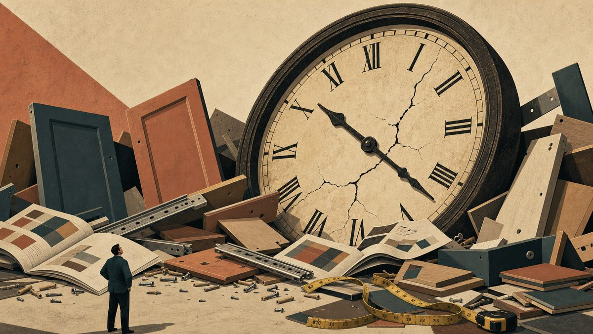

Самая глупая фраза, которую сейчас может произнести мебельщик, это не «рынок умер», не «клиент обнаглел» и даже не «маркетплейсы всё испортили». Самая глупая фраза звучит иначе: «У меня на это нет времени».

Раньше эту фразу можно было хотя бы понять, не оправдать, но именно понять (прим. о том, что важно не путать понимание, с оправданием и принятием я напишу отдельную стать). Заказов было много, замеров много, производство забито, монтажники бегали по адресам, продавцы не справлялись с входящим потоком, а собственник жил в режиме вечного пожара и искренне считал, что занят чем-то важным. Хотя, если положить руку на сердце, чаще всего он был занят не важным делом, а обслуживанием хаоса.Ведь его (Хаоса) было столько, что со стороны это казалось полноценной деловой активностью.
Сейчас другая история: спрос просел, клиент стал осторожнее, ипотека усложнилась, деньги подорожали, и покупка мебели всё чаще откладывается, урезается, дробится, заменяется более дешёвым вариантом или превращается в бесконечное «мы подумаем и вернёмся». Возвращается клиент, конечно, потом действительно, но только обычно к кому-то другому.
И вот в этой ситуации, когда заказов у многих стало заметно меньше, производство недогружено, а продавцы перестали захлёбываться от потока и смотрят в CRM, как рыбак смотрит в пустую лунку, собственник всё равно повторяет мантру: «Нет времени».
Нет времени заняться CRM, разобрать старую клиентскую базу, посчитать, какие каналы приносят прибыль, а какие лишь создают ощущение, что бизнес ещё жив. Нет времени обучить продавцов, навести порядок в карточках товаров, снять нормальные фото и видео, понять, почему клиенты уходят после расчёта, позвонить тем, кто покупал три года назад, собрать отзывы, посчитать рекламации.Нет времени разобраться, на каких заказах вы зарабатываете, а на каких просто героически переносите деньги из одного кармана в другой, теряя по дороге нервы, монтажников и веру в человечество.
И тут возникает неприятный вопрос. Если заказов стало меньше, а времени на главное по-прежнему нет, значит, проблема была не в заказах. Проблема была и остаётся в том, что в компании не умеют выбирать главное, а это уже не тайм-менеджмент, а управление, точнее, его отсутствие.
«Нет времени» - это не про время
Когда собственник говорит «нет времени», он почти никогда не говорит про время, то Он говорит про приоритеты. Просто слово «приоритеты» звучит неприятно, потому что сразу становится понятно: кто-то должен принять решение. А принимать решение всегда больнее, чем жаловаться на обстоятельства.
Гораздо проще сказать «нет времени», и это звучит как уважительная причина. Вроде бы человек ни в чём не виноват, он же не бездельник, он весь день в делах. У него звонки, поставщики, сотрудники, банки, аренда, маркетплейсы, доставка, рекламации, бухгалтерия, производство, дизайнер, который опять не туда поставил розетку, и клиент, который хочет кухню как на картинке, но в три раза дешевле и желательно вчера. Выглядит убедительно.
На самом деле «нет времени» почти всегда означает одно из двух. Либо мне это в действительности не важно. Либо мне важно, но я не готов перестать делать что-то другое. И оба варианта для бизнеса полезны, если в них честно признаться.
Если CRM не важна, не надо делать вид, что вы когда-нибудь ей займётесь. Вычеркните её из списка, перестаньте мучить сотрудников фразой «надо бы навести порядок» и честно скажите: «Мы управляем продажами на памяти, интуиции и молитве, пока работает, не трогаем». Решение плохое, но хотя бы честное.
Если старая клиентская база не важна, то и здесь не надо изображать процесс. Не надо хранить её как музей несостоявшихся денег и обещать «когда-нибудь сделаем рассылку». Не сделаете, забудьте, похороните. Только потом не удивляйтесь, что новые клиенты стоят всё дороже, а старые покупают у конкурентов.
Если обучение продавцов не важно, тоже можно признать. Только тогда не злитесь, когда продавцы отвечают клиенту так, будто защищаются от нападения. Они не виноваты, они работают ровно так, как вы им позволили.
А вот если всё это действительно важно, фраза «нет времени» превращается уже не в объяснение, а в признание. В признание того, что собственник не управляет вниманием компании. А внимание компании, между прочим, такой же ресурс, как деньги, люди, склад, реклама и производственные мощности. Только его обычно никто не считает, поэтому его особенно весело сжигают на совещаниях, в чатах, на срочных поручениях и на задачах, которые вчера были важными, сегодня стали непонятными, а завтра тихо умерли без отпевания.
Кризис делает эту отмазку особенно дорогой
Когда рынок растёт, бизнесу прощается многое. Можно плохо вести CRM, потому что новые клиенты приходят сами, можно не считать маржу по каналам, потому что денег вроде хватает, не разбирать ассортимент, потому что всё понемногу продаётся, и не обучать продавцов, потому что клиент достаточно горячий и иногда покупает даже вопреки продавцу. Можно не заниматься отзывами, потому что сарафан работает сам, и не строить систему повторных продаж, потому что впереди ещё много новых покупателей, новых домов, новых ремонтов, новых кухонь и новых надежд в старой упаковке.
Рост рынка вообще опасная штука. Он маскирует управленческую слабость под предпринимательскую энергию: когда заказов много, собственнику кажется, что он отлично управляет бизнесом. Хотя иногда он просто сидит на потоке, как человек на надувном матрасе, которого несёт по реке. Он машет руками, кричит, что знает реку, но по факту его несёт вода.
А потом вода уходит, и сразу становится видно, где был бизнес, а где был матрас.
В кризис цена ошибки резко вырастает. Если раньше компания теряла десять заявок из ста и всё равно жила, теперь те же десять потерянных заявок могут оказаться разницей между прибылью и минусом. Если раньше плохой продавец просто недозарабатывал, теперь он сжигает входящий поток, который и так стал тонким. Если раньше рекламации можно было списывать на «ну мебель же сложный товар», теперь каждая рекламация съедает маржу, репутацию и желание клиента когда-либо произносить название вашей компании без медицинских терминов.
В кризис нельзя позволить себе роскошь хаоса. Но многие мебельщики делают ровно наоборот. Они начинают бегать ещё быстрее, хотя нужно было бы остановиться и подумать. Запускают ещё одну акцию, хотя стоило бы разобраться, почему предыдущие акции не принесли прибыли. Дают ещё одну скидку, хотя достаточно было бы посчитать, что после этой скидки от заказа остаётся только фотография для портфолио и лёгкий запах горелых денег. Требуют от продавцов «активнее работать», хотя продавцам нужно не «активнее», а понятнее: с кем говорить, что предлагать, какие возражения закрывать, какие риски снимать, где следующий шаг, где контроль.
Проблема не в том, что мебельщики мало работают. Многие как раз работают слишком много. Проблема в том, что они продолжают много работать над тем, что уже не работает.
У системы никогда не находится подходящего времени
Самое "смешное" во всей этой истории, если такое слово вообще уместно, что у системы в мебельных компаниях никогда не находится подходящего времени. Когда заказов много, собственник говорит: «Сейчас некогда внедрять порядок, у нас сезон». Когда заказов мало, он же говорит: «Сейчас некогда внедрять порядок, надо срочно продавать». А когда заказов умеренно, порядок откладывается, потому что «и так работает».
Получается очень удобная управленческая религия: систему надо внедрять когда-нибудь потом, в тот прекрасный день, когда заказов будет достаточно, денег много, сотрудники спокойны, клиенты благодарны, поставщики пунктуальны, монтажники трезвы духом и телом, а собственник проснётся утром и почувствует, что сегодня самое время заняться процессами.
Проблема только в том, что такого дня не будет. Бизнес не даёт идеального момента для наведения порядка. Он всегда шумит, мешает, требует, отвлекает и притворяется, что всё срочно, поэтому порядок наводят не тогда, когда появилось свободное время. Порядок наводят тогда, когда наконец поняли: без него дальше будет дороже.
Словарь мебельного «нет времени»
Давайте переведём привычные фразы на нормальный русский язык.
«У нас нет времени заниматься CRM» означает: мы не знаем, сколько клиентов потеряли, кто кому должен перезвонить, где зависли расчёты, почему человек не купил, кто отвечает за следующий контакт и сколько денег лежит в нашей базе мёртвым слоем.
«У нас нет времени обучать продавцов» означает: мы тратим деньги на рекламу, аренду, сайт, маркетплейсы, выставку и образцы, а потом отдаём клиента человеку, который не умеет объяснить разницу между материалами, не задаёт нормальных вопросов и считает, что главное в продаже мебели — сказать клиенту «ну вы подумайте».
«У нас нет времени считать маржу» означает: мы путаем выручку с прибылью, движение с результатом, а большой заказ с хорошим заказом. Хотя иногда большой заказ оказывается просто большой проблемой с доставкой.
«У нас нет времени заниматься отзывами» означает: мы доверили репутацию случаю, монтажникам, недовольным клиентам и тем счастливым людям, которые вспоминают о компании только тогда, когда у них что-то отвалилось.
«У нас нет времени делать нормальный контент» означает: мы продаём визуальный продукт так, будто клиент должен купить шкаф по техническому описанию, мутной фотографии и вере в лучшее.
«У нас нет времени работать со старой базой» означает: мы готовы платить всё больше за новых клиентов, но не готовы поговорить с теми, кто уже у нас покупал, нас знает, возможно, остался жив и даже не против купить что-то ещё.
«У нас нет времени анализировать рекламации» означает: мы предпочитаем каждый раз героически исправлять последствия, вместо того чтобы один раз понять причину.
«У нас нет времени пересматривать ассортимент» означает: мы продолжаем держать в каталоге товары, которые не продаются, плохо маржинальны, сложно производятся, создают рекламации и живут в компании только потому, что директор должен иметь возможность сказать: «У нас широкий выбор». Широкий выбор, кстати, часто оказывается не конкурентным преимуществом, а формой складской депрессии.
Главный вопрос: "Чем вы заняты на самом деле?!"
В кризис собственнику бесполезно спрашивать себя: «Где взять время?» Это слабый вопрос. Сильный вопрос звучит иначе: «Что мы продолжаем делать только потому, что привыкли?» Потому что время чаще всего занято не важными вещами, а просто привычными.
Привычно каждую неделю обсуждать продажи, не меняя саму систему продаж. Привычно ругать рекламщика, не имея нормальной аналитики, и требовать от продавцов результата, не дав им инструмента. Привычно снижать цену вместо того, чтобы повышать ценность, смотреть на конкурентов вместо того, чтобы смотреть на клиента, и запускать акции, потому что страшно признать, что проблема не в цене. Привычно говорить «рынок плохой», потому что это снимает личную ответственность. Рынок действительно плохой, но он плохой для всех. А умирают почему-то не все одинаково.
В этом, собственно, и неприятность. Кризис не просто снижает продажи, он проявляет качество управления. Когда всё хорошо, слабая система может выглядеть вполне нормальной, а когда всё плохо, она начинает трещать. И здесь важно не перепутать причину и следствие. Компания разваливается не потому, что кризис. Кризис просто перестал оплачивать её ошибки.
Что делать вместо «нет времени»
Первое: разобрать воронку продаж. Не на уровне «заявок мало», а нормально, по шагам. Сколько обращений приходит, откуда, через сколько минут отвечают, сколько клиентов удалось довести до диалога, сколько дошло до расчёта, до замера, до оплаты. Где люди исчезают и почему. Что им говорят, а главное, что им не говорят. Какие возражения повторяются, какие продавцы теряют больше, какие каналы дают мусор, а какие живых людей с деньгами и потребностью. Пока этого нет, разговоры о продажах напоминают обсуждение погоды в древнем племени: все чувствуют, что что-то происходит, но объясняют это характером богов.
Второе: поднять старую клиентскую базу. Не надо начинать с великих CRM-стратегий, сегментаций уровня международной корпорации и презентации на сорок слайдов. Для начала достаточно выгрузить клиентов за последние несколько лет и понять, кому из них можно предложить следующий продукт или сервис. Кто покупал кухню, тому через какое-то время могут понадобиться шкафы, прихожая, гардеробная, кабинет, детская, матрас, обновление фасадов, дополнительное хранение, мебель на дачу, мебель родителям, мебель детям, которые выросли быстрее, чем ваш отдел маркетинга. Клиент, который уже купил у вас и не получил психологическую травму, это не «прошлая продажа», а полноценный актив. Только лежит этот актив у многих как старый инструмент в гараже: вроде есть, но никто не знает где, и пользоваться лень.
Третье: посчитать прибыльность каналов. Не выручку. Выручка, конечно, цифра приятная, особенно если смотреть на неё издалека и не задавать лишних вопросов. Только бизнес живёт не выручкой, а маржой, деньгами, скоростью оборота, рекламациями, возвратами, логистикой, комиссией, скидками и стоимостью управленческого геморроя, который почему-то редко попадает в отчёт, хотя в жизни занимает половину дня. Сайт, салоны, маркетплейсы, дизайнеры, дилеры, рекомендации, Авито, соцсети, корпоративные заказы, строители, комплектация. Каждый канал нужно смотреть отдельно. И задавать не вопрос «откуда больше продаж», а другой: «где мы реально зарабатываем, а где просто заняты». Быть занятым и зарабатывать, это разные профессии.
Четвёртое: пересобрать ассортимент. В кризис нельзя держать ассортимент как музей старых надежд. Каждый товар должен иметь роль: одни приводят клиента, другие дают маржу, третьи помогают закрывать комплект, четвёртые нужны для витрины и демонстрации возможностей. А пятые надо просто убрать, потому что они не продаются, мешают продавцам, путают клиента, занимают внимание, усложняют производство и живут в компании только потому, что когда-то собственнику показалось: «Интересная модель, надо попробовать». Попробовали, не получилось. Хватит кормить.
Пятое: навести порядок в карточках товаров, фото, видео и описаниях. Мебель нельзя продавать в интернете так, будто клиент покупает мешок цемента. Ему недостаточно знать размер, цвет и материал, ему нужно понять, как это будет выглядеть у него дома, влезет ли в комнату, не будет ли смотреться дешёво, выдержит ли жизнь, детей, гостей, кота, сборщика и внезапное желание супруги всё переставить. Фотография должна продавать не предмет, а спокойствие. Видео должно показывать не фасад, а использование. Описание должно не перечислять «ЛДСП, кромка, направляющие», а объяснять, что это значит для клиента. Потому что клиент не покупает направляющие. Клиент покупает ящик, который не будет скрипеть и выпадать, когда он откроет его утром в плохом настроении.
Шестое: учить продавцов снижать страх ошибки. Покупатель мебели сейчас стал заметно осторожнее. Он боится переплатить, боится выбрать не тот размер, боится, что цвет на образце и цвет дома окажутся родственниками только по паспорту. Боится, что привезут не вовремя, что сборка превратится в археологическую экспедицию, что рекламация оставит его один на один с менеджером, который внезапно перестал быть таким вежливым, как до оплаты. Поэтому продавец должен не просто «продавать», он должен снижать риск: объяснять процесс, фиксировать договорённости, показывать примеры, проговаривать сроки, предупреждать ограничения, помогать сравнить варианты и честно говорить, где можно сэкономить, а где экономия потом вылезет боком и поселится с клиентом в одной комнате.
Седьмое: ввести короткий ежедневный управленческий ритуал. Не совещание на полтора часа, после которого все расходятся с ощущением, что пострадали за компанию, а короткий ритм: что было вчера, где потеряли клиента, где зависла задача, где деньги, какие три действия сегодня, кто отвечает, когда проверяем, что мешает. Всё! Компания должна каждый день возвращаться к реальности, а не к коллективным фантазиям о том, что «в целом всё под контролем». Фраза «в целом всё под контролем» в бизнесе обычно означает, что никто уже не понимает деталей, но все надеются не испортить настроение.
Главный приём в кризис: не добавить задачи, а убить лишние
Большинство собственников, услышав такой список, пугается. И правильно пугается :-) , потому что если ко всему старому хаосу просто добавить CRM, аналитику, базу, контент, обучение, отзывы, ассортимент, ежедневные ритуалы и работу с рекламациями, компания не станет системной. Она просто станет ещё более уставшей.
Поэтому главный шаг не в том, чтобы добавить новые задачи. Главный шаг в том, чтобы убить старые. Убрать совещания, где не принимают решений, отчёты, которые никто не читает, акции, которые не считают, товары, которые не продаются, поручения, у которых нет владельца, и чаты, в которых двадцать человек изображают участие. Убрать ручное согласование того, что давно должно работать по правилу, и привычку собственника вмешиваться во всё, а потом жаловаться, что сотрудники ничего не решают. Убрать культ срочности и задачу «давайте ещё подумаем», если думать уже нечем, а решение давно понятно.
В кризис нужно не больше работать, а быстрее учиться и жёстче выбирать. Потому что бизнес не резиновый, внимание собственника тоже не резиновое, как и команда не резиновая. Даже терпение жены собственника, которое почему-то тоже часто входит в неформальный капитал компании, и то не резиновое. У нас только Москва резиновая :-)
Как учиться быстрее описано в моей статье
«Нет времени» отравляет всю команду
Когда собственник не умеет выбирать главное, сотрудники начинают жить в мире, где всё важно. А когда всё важно, не важно уже ничего.
Сегодня надо срочно обзвонить базу, завтра срочно выложить новые карточки, послезавтра срочно переделать презентацию, потом срочно разобраться с рекламацией, позвонить дизайнеру, проверить цены конкурентов, подготовить акцию. А потом срочно забыть всё, потому что у директора появилась новая идея после утренней прогулки, видео на YouTube или разговора с человеком, у которого «всё растёт».
Сотрудники в такой системе не ленивые, они адаптируются. Они учатся ждать, какая задача умрёт сама, перестают верить в срочность, перестают брать ответственность, потому что завтра приоритет всё равно поменяется. И начинают делать не то, что важно бизнесу, а то, за что сегодня громче всего спрашивают. А потом собственник злится: «Почему они без меня ничего не делают?» Потому что вы сами научили их, что без вас ничего и не имеет смысла.
Сотрудники делают не то, что вы написали в стратегии. Они делают то, что реально вознаграждается и наказывается в ежедневной жизни компании. Если вознаграждается тушение пожаров, будут пожары, а если героизм, появятся ситуации, требующие героизма. Если умение красиво объяснить, почему не получилось, появятся мастера объяснений, а если вознаграждается дисциплина по нескольким важным показателям, постепенно появится управление. Не сразу, конечно, бизнес не сказка, но хотя бы появится шанс.
Время есть. Нет права тратить его, как раньше
Самое неприятное в нынешней ситуации для мебельщиков в том, что кризис забирает удобные оправдания. Когда рынок рос, можно было не меняться. Когда заказов было много, можно было не считать, не учиться продавать, не думать о повторных продажах, не строить бренд, доверие, контент, сервис и сарафан как систему. Реклама как-то работала, спрос как-то рождался сам, и всё это позволяло жить.
Сейчас всё это всплыло. И оказалось, что у многих компаний нет не времени. У них нет управленческого фокуса. А это намного хуже. Время найти можно. Фокус надо вырастить. Причём обычно через боль, через отказ от любимых игрушек и через признание, что часть привычных действий давно превратилась в дорогую имитацию бизнеса.
Поэтому, когда в следующий раз собственнику мебельной компании захочется сказать «у меня на это нет времени», лучше сначала остановиться и задать себе три вопроса.
Первый: это действительно важно для выживания и развития бизнеса?
Второй:если важно, что я должен перестать делать, чтобы это появилось в работе?
Третий: если я ничего не перестану делать, значит ли это, что я просто вру себе про важность?
Неприятные вопросы, зато полезные. Бизнес вообще редко умирает оттого, что собственник не знал правильных слов. Он умирает оттого, что собственник слишком долго называл важное «несрочным», а привычное «работой».
Финал
«Нет времени»в кризис звучит не как объяснение, а как диагноз. Если заказов стало меньше, люди загружены слабее, мощности простаивают, продавцы ждут входящих, а у собственника по-прежнему нет времени на CRM, базу, аналитику, продавцов, ассортимент, отзывы, контент и рекламации, значит, бизнес занят не развитием. Он занят сохранением старого хаоса, а старый хаос в новом рынке уже не выглядит как предпринимательская энергия. Он выглядит просто как хаос и без романтики, без драйва и без кассы.
Поэтому мебельщикам сейчас не нужно искать время, им нужно перестать тратить его на то, что уже не работает.И если какая-то задача действительно важна, то вопрос не в том, где взять на неё время. Вопрос в том, какую старую глупость пора наконец убрать, чтобы эта задача стала частью работы.
Потому что в кризис выживают не те, у кого больше времени. Выживают те, кто перестаёт прикрывать отсутствие выбора красивой фразой «нет времени».